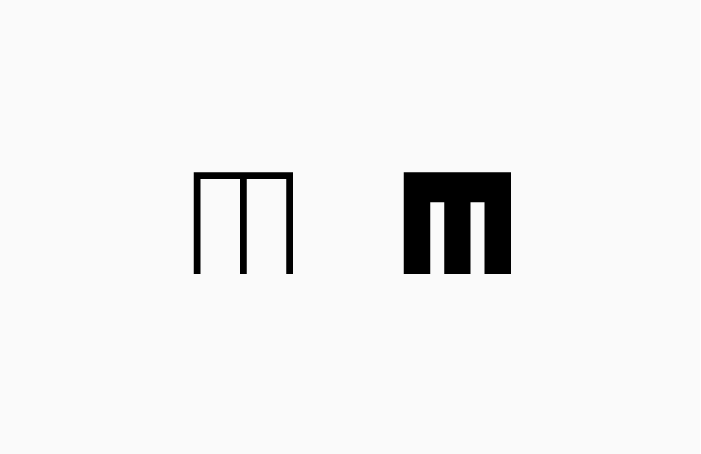
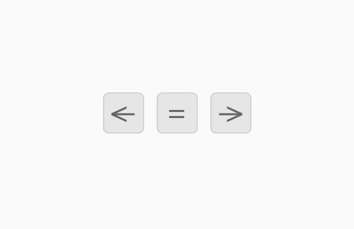

<!DOCTYPE html>
<html lang="es">
    <head>
        <meta charset="UTF-8">
        <meta http-equiv="X-UA-Compatible" content="IE=edge">
        <meta name="viewport" content="width=device-width, initial-scale=1.0">
        <title>Prueba Percepción de Variables Gráficas</title>
        <script src="jspsych/dist/jspsych.js"></script>
        <script src="jspsych/dist/plugin-html-keyboard-response.js"></script>
        <script src="jspsych/dist/plugin-instructions.js"></script>
        <script src="jspsych/dist/plugin-html-button-response.js"></script>
        <script src="jspsych/dist/plugin-survey-multi-select.js"></script>
        <script src="jspsych/dist/plugin-sketchpad.js"></script>
        <script src="js/data_practica.js"></script>

        <link rel="stylesheet" href="jspsych/dist/jspsych.css">
        <link rel="stylesheet" href="css/customStyles.css">
    </head>
    <body></body>
    <script>
        const jsPsych = initJsPsych();
        const timeline = [];

        // VARIABLES
        // var bloques = [0, 1, 2, 3];
        var bloques = [0];
        var bloqueActual;
        var direccionSerie;
        var tipoVariacion;
        var estimuloModelo;
        var incremento;
        var atributo;
        var cssConstante;
        var variacionFuente;
        var errores = [];
        var umbralSerie;
        var umbralBajo;
        var umbralAlto;
        let signoRespuesta;
        var contadorEnsayos = 0;
        var contadorSeries = 0;
        //var erroresConsecutivos = 0;
        var ubicacionesEstimulos = {};
        var respuestaIngresada;
        var cadenaRespuestas = [];
        var listaVariaciones = [];
        var respuestasPorSerie = {};
        var umbralesPorSerie = {};
        var iniciosDescendentes;
        var iniciosAscendentes;
        var datosCompletos;
        var nuevaPractica = false;

        const info = [ {
                nombre: 'peso',
                pregunta: 'peso',
                atributocss: 'wght',
                modelo: 108,
                string: "'wdth' 700, 'slnt' 0",
                incremento: 4,
                iniciosDescendentes: [136, 132, 140, 144],
                iniciosAscendentes: [84, 92, 84, 80],
                // iniciosDescendentes: [136],
                // iniciosAscendentes: [84],
                extremos: [76, 148]
            },
            {
                nombre: 'ancho',
                pregunta: 'ancho',
                atributocss: 'wdth',
                modelo: 780,
                string: "'wght' 110, 'slnt' 0",
                incremento: 15,
                iniciosDescendentes: [840, 870, 885, 915],
                iniciosAscendentes: [660, 675, 705, 705],
                extremos: [645, 930],
            },
            {
                nombre: 'oblicuacion',
                pregunta: 'inclinación',
                atributocss: 'slnt',
                modelo: 10,
                string: "'wdth' 700, 'wght' 110",
                incremento: 1,
                iniciosDescendentes: [19, 17, 18, 16],
                iniciosAscendentes: [3, 4, 2, 1],
                extremos: [0, 20],
            },
            {
                nombre: 'oblicuacion-izquierda',
                pregunta: 'inclinación',
                atributocss: 'slnt',
                modelo: -10,
                string: "'wdth' 700, 'wght' 110",
                incremento: 1,
                iniciosDescendentes: [-19, -17, -18, -16],
                iniciosAscendentes: [-3, -4, -2, -1],
                extremos: [-20, 0]
            }

        ]


        
        // FUNCIONES
        const claseEstimulo = function () {
            var tiposEstimulo = ["modelo", "comparacion"]
            
            const stimuliContainers = document.querySelectorAll(".stimulus");

            for (let i = 0; i < stimuliContainers.length; i++) {
                stimuliContainers[i].classList.add(tiposEstimulo.splice( Math.floor(Math.random()*tiposEstimulo.length), 1 )[0]);
            }
        }

        const variacionEstimulos = function () {

            //seleccionar contenedor con clase .modelo y modificar peso de fuente
            const modelo = document.querySelector(".modelo");
            modelo.style.cssText = "font-variation-settings:'" + atributo + "'" + estimuloModelo  + ',' + cssConstante;

            //seleccionar contenedor con clase .comparacion y modificar peso de fuente, de acuerdo con la dirección de la serie
            const comparacion = document.querySelector(".comparacion");

            switch(contadorEnsayos){
                case 1:
                    if (direccionSerie === "ascendente") {
                        variacionFuente = iniciosAscendentes.splice( Math.floor(Math.random()*iniciosAscendentes.length), 1 )[0];
                        comparacion.style.cssText = "font-variation-settings:'" + atributo + "'" + variacionFuente + ',' + cssConstante;
                        console.log('El valor del estímulo de comparación fue: '+variacionFuente);
                    } else if (direccionSerie === "descendente") {
                        variacionFuente = iniciosDescendentes.splice( Math.floor(Math.random()*iniciosDescendentes.length), 1 )[0];
                        comparacion.style.cssText = "font-variation-settings:'" + atributo + "'" + variacionFuente + ',' + cssConstante;
                    }
                    break;

                default:
                    switch(bloqueActual){
                        case 0:
                        case 1:
                        case 2:
                            if(direccionSerie === "ascendente"){
                                variacionFuente+=incremento;
                                comparacion.style.cssText = "font-variation-settings:'" + atributo + "'" + variacionFuente + ',' + cssConstante;
                                console.log('El valor del estímulo de comparación fue: '+variacionFuente);
                            } else if (direccionSerie === "descendente") {
                                console.log('El valor del estímulo de comparación fue: '+variacionFuente);
                                variacionFuente-=incremento;
                                comparacion.style.cssText = "font-variation-settings:'" + atributo + "'" + variacionFuente + ',' + cssConstante;
                                console.log('El valor del estímulo de comparación fue: '+variacionFuente);
                            }
                            break;
                        case 3: 
                            if (direccionSerie === "ascendente") {
                                console.log(variacionFuente + ', ' + incremento);
                                variacionFuente-=incremento;
                                comparacion.style.cssText = "font-variation-settings:'" + atributo + "'" + variacionFuente + ',' + cssConstante;
                                console.log('El valor del estímulo de comparación fue: '+variacionFuente);
                            } else if (direccionSerie === "descendente") {
                                console.log('El valor del estímulo de comparación fue: '+variacionFuente);
                                variacionFuente+=incremento;
                                comparacion.style.cssText = "font-variation-settings:'" + atributo + "'" + variacionFuente + ',' + cssConstante;
                            }
                    }
            }

            

            
        }

        const obtenerUbicaciones = function() {
            const container = document.querySelectorAll(".stimulus");

            for(let i = 0; i < container.length; i++) {
                var tipoEstimulo = container[i].className.split(' ').pop();
                var ubicacionEstimulo = container[i].className.split(' ')[1];
                ubicacionesEstimulos[tipoEstimulo] = ubicacionEstimulo;
            }
        }

        const evaluarRespuesta = function() {
            // Evaluar la respuesta para decidir si se corre un nuevo ensayo

            switch(jsPsych.data.getLastTrialData().values()[0].response) {
                case 0:
                    respuestaIngresada = 'izquierda';
                    break;
                case 1:
                    respuestaIngresada = 'igual';
                    break;
                case 2:
                    respuestaIngresada = 'derecha';
            }
        }

        // Traduce respuestaIngresada a signo ('+','-','='); lo añade a cadenaRespuestas
        var respuestas_a_Signos = function() {

            //let signoRespuesta;

            switch(respuestaIngresada){
                case(ubicacionesEstimulos['modelo']):
                    signoRespuesta = '-';
                    cadenaRespuestas.push(signoRespuesta);
                    break;
                
                case('igual'):
                    signoRespuesta = '=';
                    cadenaRespuestas.push(signoRespuesta);
                    break;

                case(ubicacionesEstimulos['comparacion']):
                    signoRespuesta = '+';
                    cadenaRespuestas.push(signoRespuesta);
            }

        }

        var invertirDireccionSerie = function() {
            switch(direccionSerie){
                case('ascendente'):
                    direccionSerie = 'descendente';
                    break;
                case('descendente'):
                    direccionSerie = 'ascendente';
            }
        }

        var umbralComplementario = function() {
            switch(direccionSerie){
                case ('ascendente'):
                    indexUmbralAlto = cadenaRespuestas.length-2;
                    // Primer respuesta opuesta al inicio de la serie
                    indexUmbralBajo = cadenaRespuestas.findIndex(element => element !== '-');

                    if (indexUmbralBajo < indexUmbralAlto) {
                        umbralBajo = Math.abs(listaVariaciones.at(indexUmbralBajo)) - incremento/2;
                        return
                    }
                    umbralBajo = umbralAlto;

                    break;

                case('descendente'):
                    indexUmbralBajo = cadenaRespuestas.length-2;
                    // Primer respuesta opuesta al inicio de la serie
                    indexUmbralAlto = cadenaRespuestas.findIndex(element => element !== '+');

                    if (indexUmbralAlto < indexUmbralBajo) {
                        umbralAlto = Math.abs(listaVariaciones.at(indexUmbralAlto)) + incremento/2;
                        return
                    }
                    umbralAlto = umbralBajo;
            }
        }
        
        var listaErrores = function() {
            errores = jsPsych.data.get().filter( {id: 'respuesta', serieNumero: contadorSeries} ).last(2).select('responseSign').values;
        }

        var forzarFinSerieAscendente = function() {
            respuestasPorSerie[contadorSeries] = cadenaRespuestas;
            console.log(respuestasPorSerie);

            indexUmbralBajo = cadenaRespuestas.findIndex(element => element !== '-');
            umbralBajo = Math.abs(listaVariaciones.at(indexUmbralBajo)) - (incremento/2);
            
            indexUmbralAlto = cadenaRespuestas.findIndex(element => element == '+');
            umbralAlto = Math.abs(listaVariaciones.at(indexUmbralAlto)) - (incremento/2);

            console.log("Umbral alto: " + umbralAlto + "; Umbral bajo: " + umbralBajo);

            var datosUmbrales = jsPsych.data.get().filter( {id: 'respuesta'} ).last()['trials'][0];
            datosUmbrales.umbralAlto = umbralAlto;
            datosUmbrales.umbralBajo = umbralBajo;
            datosUmbrales.variable = tipoVariacion;

            umbralesPorSerie[contadorSeries] = umbralSerie;

            // Tiene que reiniciarse para olvidar las respuestas de la serie pasada, pero no se guardan en ningún lado todavía
            cadenaRespuestas = [];
            contadorEnsayos = 0;
            listaVariaciones = [];
            invertirDireccionSerie();
        }

        var forzarFinSerieDescendente = function() {
            respuestasPorSerie[contadorSeries] = cadenaRespuestas;
            console.log(respuestasPorSerie);

            indexUmbralAlto = cadenaRespuestas.findIndex(element => element !== '+');
            umbralAlto = Math.abs(listaVariaciones.at(indexUmbralAlto)) + (incremento/2);
            
            indexUmbralBajo = cadenaRespuestas.findIndex(element => element == '-');
            umbralBajo = Math.abs(listaVariaciones.at(indexUmbralBajo)) + (incremento/2);

            console.log("Umbral alto: " + umbralAlto + "; Umbral bajo: " + umbralBajo);

            var datosUmbrales = jsPsych.data.get().filter( {id: 'respuesta'} ).last()['trials'][0];
            datosUmbrales.umbralAlto = umbralAlto;
            datosUmbrales.umbralBajo = umbralBajo;
            datosUmbrales.variable = tipoVariacion;

            umbralesPorSerie[contadorSeries] = umbralSerie;
            
            // Tiene que reiniciarse para olvidar las respuestas de la serie pasada, pero no se guardan en ningún lado todavía
            cadenaRespuestas = [];
            contadorEnsayos = 0;
            listaVariaciones = [];
            invertirDireccionSerie();
        }

        // PANTALLAS    
        
        var pantallaInicial = {
            //Esta es la presentación y aquí se define la dirección de la serie inicial
            type: jsPsychHtmlKeyboardResponse,
            stimulus: '<span style="font-size:40px;">Prueba de percepción de variables gráficas</span> <br/><br/> <span>Presiona la tecla <strong>A</strong> o <strong>D</strong> para continuar</span>',
            choices: ['a', 'd'],
            on_finish: function(data){
                // 1 Seleccionar direccion de la primera serie

                var direccionSeleccionada = event.key;

                switch(direccionSeleccionada) {
                    case('a'):
                    case('A'):
                        direccionSerie = "ascendente";
                        break;
                    case('d'):
                    case('D'):
                        direccionSerie = "descendente";
                }

                console.log('E ha tecleado esta letra: ' + direccionSeleccionada);
                console.log('La dirección de la serie será' + direccionSerie);

                // 3 Se asigna ID del participante (Ejemplo: 061320221350)
                // Tomar fecha y hora y dejar solo cadena de números (o tal vez dejarlo así)
                //asignaIdParticipante();
            }
        }
        timeline.push(pantallaInicial);

        var pruebaLectura = {
            type: jsPsychInstructions,
            pages: [
                '<p style="font-size:24px;">Lea en voz alta el siguiente texto:</p><br><br>' +
                '<p style="font-size: 15px; line-height:1.75; width:600px; text-align: left;">Un pajarito advirtió que la puertecita de su jaula había quedado abierta. Al principio pensó en aprovechar para escapar volando, pero después cambió de opinión temiendo perder su libertad, si, durante su ausencia, volvía a cerrarse la puerta. <br><p style="font-size: 15px; line-height:1.75; width:600px; text-align: right">&mdash;Italo Svevo</p><br><br>'
            ],
            show_clickable_nav: true,
            button_label_previous: 'Regresar',
            button_label_next: 'Siguiente'
        }
        timeline.push(pruebaLectura);

        var cuestionario = {
            type: jsPsychSurveyMultiSelect,
            questions: [
                {
                prompt: "<p style='font-size: 24px; line-height:1.75; text-align: center;'>Si tiene alguno de estos padecimientos, marque la casilla correspondiente;<br> de lo contrario dé clic en Continuar</p><br>", 
                horizontal: true,
                options: ["Degeneración macular", "Glaucoma", "Catarata", "Retinopatía diabética"], 
                name: 'padecimientos'
                }
            ],
            button_label: "Continuar"
        };
        timeline.push(cuestionario);

        var instrucciones = {
            //Acá se haría la asignación de la dirección de la primera serie, porque en las instrucciones el participante toma control de los aparatos de input, y solo comenzaría su prueba dando clic en algún botón o presienando Enter. Cambiaría el TYPE de instrucciones
            type: jsPsychInstructions,
            pages: ['<p style="font-size:40px">Presentación</p>' +
                '<p>Veamos primero en qué consiste la prueba</p>',
                'Aparecerá una cruz al centro de la pantalla, deberás fijar tu atención en ella' +
                '<br><br>' + 
                '</img><br>',
                'Después verás un par de signos durante un lapso muy breve' +
                '<br><br>' + 
                '</img><br>',
                'Por último contestarás una pregunta, dando clic en una de las tres opciones' +
                '<br><br>' + 
                '</img><br>',
                '<p style="font-size:40px">Estudiamos 3 características gráficas</p>',
                '<p style="font-size:24px">Peso</p>' +
                '<p class="inline" style="font-size:200px; font-family:&quot;optotype&quot;; font-variation-settings: &quot;wght&quot; 50, &quot;wdth&quot; 700;">M</p><div class="inline" style="width:40px"></div><p class="inline" style="font-size:200px; font-family:&quot;optotype&quot;; font-variation-settings: &quot;wght&quot; 180, &quot;wdth&quot; 700;">M</p>',
                '<p style="font-size:24px">Ancho</p>' +
                '<p class="inline" style="font-size:200px; font-family:&quot;optotype&quot;; font-variation-settings: &quot;wght&quot; 110, &quot;wdth&quot; 300;">M</p><div class="inline" style="width:40px"></div><p class="inline" style="font-size:200px; font-family:&quot;optotype&quot;; font-variation-settings: &quot;wght&quot; 110, &quot;wdth&quot; 1000;">M</p>',
                '<p style="font-size:24px">Inclinación</p>' +
                '<p class="inline" style="font-size:200px; font-family:&quot;optotype&quot;; font-variation-settings: &quot;wght&quot; 80, &quot;wdth&quot; 700, &quot;slnt&quot; 6;">M</p><div class="inline" style="width:40px"></div><p class="inline" style="font-size:200px; font-family:&quot;optotype&quot;; font-variation-settings: &quot;wght&quot; 80, &quot;wdth&quot; 700, &quot;slnt&quot; 20;">M</p>',
                '<p style="font-size:24px">Hagamos una ronda de práctica, para familiarizarnos con la prueba</p>'
            ],
            button_label_next: "Siguiente",
            button_label_previous: "Anterior",
            show_clickable_nav: true
        }
        timeline.push(instrucciones);

        // var inicioSerie = {
        //     type: jsPsychHtmlKeyboardResponse,
        //     stimulus: '<p style="font-size:40px">Siguiente serie en:</p>',
        //     data: {
        //         id: 'SERIE'
        //     },
        //     trial_duration: 3000,
        //     on_finish: function(data) {
        //         contadorSeries++;
        //         console.log('Esta es la serie número ' + contadorSeries);
        //         data.direccionSerie = direccionSerie;
        //     }
        // }

        var inicioSerie = {
            type: jsPsychSketchpad,
            canvas_width: 0,
            canvas_height: 0,
            show_finished_button: false,
            show_clear_button: false,
            show_undo_button: false,
            data: {
                id: 'SERIE'
            },
            trial_duration: 5000,
            show_countdown_trial_duration: true,
            countdown_timer_html: '<p style="font-size:40px">Siguiente serie comienza en <br/><br/> <span id="sketchpad-timer" style="color:green;"></span></p>',
            on_finish: function(data) {
                contadorSeries++;
                console.log('Esta es la serie número ' + contadorSeries);
                data.direccionSerie = direccionSerie;
            }
        }

        var cruzFijacion = {
            type: jsPsychHtmlKeyboardResponse,
            stimulus: '<span style="font-size:40px;">+</span>',
            choices: 'NO_KEYS',
            trial_duration: 1500,
            data: {
                id: 'fijacion' 
            },
        }

        var estimulosPractica = {
            type: jsPsychHtmlKeyboardResponse,
            stimulus: '<div class="stimulus izquierda inline">M</div><div class="spacerAngle inline"></div><div class="stimulus derecha inline">M</div>',
            options: 'NO_KEYS',
            trial_duration: 500,
            on_load: function(){
                claseEstimulo();

                let modelo = document.querySelector('.modelo');
                modelo.style.cssText = "font-variation-settings:'" + jsPsych.timelineVariable('css') + "'" + jsPsych.timelineVariable('modelo')  + ',' + jsPsych.timelineVariable('css2');

                let comparacion = document.querySelector('.comparacion');
                comparacion.style.cssText = "font-variation-settings:'" + jsPsych.timelineVariable('css') + "'" + jsPsych.timelineVariable('comparacion')  + ',' + jsPsych.timelineVariable('css2');

                obtenerUbicaciones();
            }
        }

        var respuestasPractica = {
            type: jsPsychHtmlButtonResponse,
            stimulus: function(){
                return '<p>¿Cuál tenía mayor ' + jsPsych.timelineVariable('variable') + '?</p>';
            },
            choices: ['<','=','>'],
            data: {
                correct_response: function(){
                    return ubicacionesEstimulos['comparacion'];
                },
                seccion: 'practica'
            },
            on_finish: function(data){
                evaluarRespuesta();
                var acc = false;
                console.log(data.correct_response);
                console.log(respuestaIngresada);
                if (data.correct_response == respuestaIngresada) {
                    acc = true;
                }
                data.acierto = acc;
            }
        }

        var feedback = {
            type: jsPsychHtmlKeyboardResponse,
            stimulus: function() {
                var feedback_text = '<span style="color:red;font-size:40px;">Ups, casi <br/><br/> >_< </span>';
                var last_resp_acc = jsPsych.data.getLastTrialData().values()[0].acierto;
                if (last_resp_acc == true) {
                    feedback_text = '<span style="color:green;font-size:40px;">Correcto <br/><br/> n_n</span>';
                }
                return feedback_text;
            },
            options: 'NO_KEYS',
            trial_duration: 2000
        }

        var estimulos = {
            type: jsPsychHtmlKeyboardResponse,
            stimulus: '<div class="stimulus izquierda inline">M</div><div class="spacerAngle inline"></div><div class="stimulus derecha inline">M</div>',
            options: 'NO_KEYS',
            trial_duration: 500,
            data: {
                id: 'estimulos' 
            },
            on_load: function(){
                contadorEnsayos++;
                console.log("Este es el ensayo: " + contadorEnsayos);
                claseEstimulo();
                variacionEstimulos();
                obtenerUbicaciones();
            }
        }

        var pantallaRespuestas = {
            type: jsPsychHtmlButtonResponse,
            stimulus: function(){
                return '<p>¿Cuál tenía mayor ' + info.at(bloqueActual)['pregunta'] + '?</p>';
            },
            choices: ['<','=','>'],
            data: {
                id: 'respuesta',
            },
            on_finish: function(data){
                evaluarRespuesta();
                respuestas_a_Signos();
                listaVariaciones.push(variacionFuente);
                console.log(cadenaRespuestas);
                data.responseSign = signoRespuesta;
                data.valorComparacion = variacionFuente;
                data.serieNumero = contadorSeries;
            }
        }

        var ensayosPractica = {
            timeline: [cruzFijacion, estimulosPractica, respuestasPractica, feedback],
            timeline_variables: dataPractica,
            randomize_order: true
        }

        var mensajeRepetirPractica = {
            type: jsPsychHtmlButtonResponse,
            stimulus: '<p style="font-size:24px; line-height:1.35;">Tendremos que repetir la ronda de práctica, <br/> para que nos quede todo más claro</p><br><br>',
            choices: ['Repetir práctica']
        }

        var repetirPractica = {
            timeline: [mensajeRepetirPractica],
            conditional_function: function() {
                var ultimaRonda = jsPsych.data.get().filter({seccion: 'practica'}).last(dataPractica.length);
                var respuestasCorrectas = ultimaRonda.filter({acierto: true}).count();
                var proporcion = respuestasCorrectas/dataPractica.length;
                if (proporcion < .75) {
                    nuevaPractica = true;
                    return true;
                } else {
                    nuevaPractica = false;
                    return false;
                }
            }
        }

        var loopPractica = {
            timeline: [ensayosPractica,repetirPractica],
            loop_function: function(){
                if (nuevaPractica == true) {
                    return true;
                } else {
                    return false;
                }
            }
        }
        timeline.push(loopPractica);

        var finPractica = {
            type: jsPsychHtmlButtonResponse,
            stimulus: '<p style="font-size:24px;  line-height:1.35;">¡Has terminado la práctica con éxito! <br/> Da clic para comenzar la prueba</p><br><br>',
            choices: ['Comenzar']
        }
        timeline.push(finPractica);
        
        // REPITE ENSAYO HASTA QUE SE DEBA INICIAR OTRA SERIE
        var ensayo = {
            timeline: [cruzFijacion, estimulos, pantallaRespuestas],
            loop_function: function(data) {
                
                switch(direccionSerie){

                    case('ascendente'):
                        if(info.at(bloqueActual)['extremos'].includes(variacionFuente) == true){
                            console.log('YESSSSSSSSS');
                            forzarFinSerieAscendente();
                            return false;
                        } else if ( respuestaIngresada == ubicacionesEstimulos['modelo'] || respuestaIngresada == 'igual') {
                            console.log('Se tiene que correr otro ensayo');
                            console.log(info.at(bloqueActual)['extremos'].includes(variacionFuente));
                            return true;
                        } else if (respuestaIngresada == ubicacionesEstimulos['comparacion']) {
                            listaErrores();
                            
                            console.log(errores);

                            // Si doble cambio de signo
                            if(errores[0] == '+' && errores[1] == '+' && errores.length >= 2){
                                // Guardar las respuestas de la serie
                                respuestasPorSerie[contadorSeries] = cadenaRespuestas;
                                console.log(respuestasPorSerie);

                                indexUmbralBajo = cadenaRespuestas.findIndex(element => element !== '-');
                                umbralBajo = Math.abs(listaVariaciones.at(indexUmbralBajo)) - (incremento/2);
                                
                                indexUmbralAlto = cadenaRespuestas.findIndex(element => element == '+');
                                umbralAlto = Math.abs(listaVariaciones.at(indexUmbralAlto)) - (incremento/2);

                                console.log("Umbral alto: " + umbralAlto + "; Umbral bajo: " + umbralBajo);

                                var datosUmbrales = jsPsych.data.get().filter( {id: 'respuesta'} ).last()['trials'][0];
                                datosUmbrales.umbralAlto = umbralAlto;
                                datosUmbrales.umbralBajo = umbralBajo;
                                datosUmbrales.variable = tipoVariacion;

                                umbralesPorSerie[contadorSeries] = umbralSerie;

                                // Tiene que reiniciarse para olvidar las respuestas de la serie pasada, pero no se guardan en ningún lado todavía
                                cadenaRespuestas = [];
                                contadorEnsayos = 0;
                                listaVariaciones = [];
                                invertirDireccionSerie();

                                return false;
                            } else {
                                return true;
                            }    
                        }
                        break;

                    case('descendente'):
                        if(info.at(bloqueActual)['extremos'].includes(variacionFuente) == true){
                            console.log('YESSSSSSSSS');
                            forzarFinSerieDescendente();
                            return false;
                        } else if ( respuestaIngresada == ubicacionesEstimulos['comparacion'] || respuestaIngresada == 'igual') {
                            console.log('Se tiene que correr otro ensayo');
                            return true;
                        } else if (respuestaIngresada == ubicacionesEstimulos['modelo']) {
                            listaErrores();

                            console.log(errores);

                            if(errores[0] == '-' && errores[1] == '-' && errores.length >= 2){
                                respuestasPorSerie[contadorSeries] = cadenaRespuestas;
                                console.log(respuestasPorSerie);

                                indexUmbralAlto = cadenaRespuestas.findIndex(element => element !== '+');
                                umbralAlto = Math.abs(listaVariaciones.at(indexUmbralAlto)) + (incremento/2);
                                
                                indexUmbralBajo = cadenaRespuestas.findIndex(element => element == '-');
                                umbralBajo = Math.abs(listaVariaciones.at(indexUmbralBajo)) + (incremento/2);

                                console.log("Umbral alto: " + umbralAlto + "; Umbral bajo: " + umbralBajo);

                                var datosUmbrales = jsPsych.data.get().filter( {id: 'respuesta'} ).last()['trials'][0];
                                datosUmbrales.umbralAlto = umbralAlto;
                                datosUmbrales.umbralBajo = umbralBajo;
                                datosUmbrales.variable = tipoVariacion;

                                umbralesPorSerie[contadorSeries] = umbralSerie;
                                
                                // Tiene que reiniciarse para olvidar las respuestas de la serie pasada, pero no se guardan en ningún lado todavía
                                cadenaRespuestas = [];
                                contadorEnsayos = 0;
                                listaVariaciones = [];
                                invertirDireccionSerie();

                                return false;
                            } else {
                                return true;
                            }
                        }
                }
            },
            on_finish: function(){
                
            },
            on_load: function(){
                console.log("INICIA ENSAYO")
            }
        }

        //REPITE SERIES HASTA QUE TERMINE EL EXPERIMENTO
        var serie = {
            timeline: [inicioSerie, ensayo],

            loop_function: function(data){

                var seriesRestantes = iniciosAscendentes.length + iniciosDescendentes.length;

                if (iniciosAscendentes.length == 0 && iniciosDescendentes == 0){
                    console.log('YA SE ACABÓ LA TORTURA!!!');
                    
                    let datosCompletos = jsPsych.data.get().filter( {id: 'respuesta'} ).last()['trials'][0];

                    let umbralAltoPromedio = jsPsych.data.get().filter( {id: 'respuesta', variable: tipoVariacion} ).select('umbralAlto').mean();

                    let umbralBajoPromedio = jsPsych.data.get().filter( {id: 'respuesta', variable: tipoVariacion} ).select('umbralBajo').mean();

                    let pse = (umbralAltoPromedio + umbralBajoPromedio) / 2;

                    console.log (umbralAltoPromedio + ", " + umbralBajoPromedio);

                    datosCompletos.umbralAltoPromedio = umbralAltoPromedio;
                    datosCompletos.umbralBajoPromedio = umbralBajoPromedio;
                    datosCompletos.intervaloIncertidumbre = umbralAltoPromedio - umbralBajoPromedio ;
                    datosCompletos.umbralDiferencial = (umbralAltoPromedio - umbralBajoPromedio) / 2;
                    datosCompletos.puntoIgualdadSubjetiva = pse;
                    datosCompletos.errorConstante = pse - Math.abs(info.at(bloqueActual)['modelo']);
                    datosCompletos.datosCompletos = respuestasPorSerie;
                    //console.log(datosCompletos);

                    return false;
                }
                else {
                    console.log('Aun restan ' + seriesRestantes + ' series');
                    
                    
                    return true;
                }

            },
            on_load: function(){
                console.log("INICIA SERIE")
            }
        }

        var inicioBloque = {
            type: jsPsychHtmlButtonResponse,
            stimulus: '<span style="font-size:40px;">Da clic para comenzar el bloque</span> <br/><br/>',
            choices: ['Continuar >'],
            css_classes: ['bloque']
        }

        var bloque = {
            timeline: [inicioBloque, serie],
            loop_function: function(data){
                if(bloques.length>0){
                    return true;
                }
                else {
                    return false;
                }
            },
            on_load: function(){
                //seleccionar un elemento de BLOQUES y eliminarlo
                bloqueActual = bloques.splice( Math.floor(Math.random()*bloques.length), 1 )[0];
                console.log("INICIA BLOQUE. La variable de este bloque es: " + info.at(bloqueActual)['nombre']);

                //asignar valores a las variables globales de acuerdo con INFO
                tipoVariacion = info.at(bloqueActual)['nombre'];
                incremento = info.at(bloqueActual)['incremento'];
                iniciosDescendentes = info.at(bloqueActual)['iniciosDescendentes'];
                iniciosAscendentes = info.at(bloqueActual)['iniciosAscendentes'];
                atributo = info.at(bloqueActual)['atributocss'];
                estimuloModelo = info.at(bloqueActual)['modelo'];
                cssConstante = info.at(bloqueActual)['string'];
                datosCompletos = {};

            }
        }
        timeline.push(bloque);

        var agradecimiento = {
            //A este trial se le añadiría el objeto con las respuestas por serie
            type: jsPsychHtmlKeyboardResponse,
            stimulus: '<span style="font-size:40px;">GRACIAS POR SU PARTICIPACIÓN</span>',
            choices: 'NO_KEYS',
            on_start: function(data){
                jsPsych.data.get().localSave('csv', 'data.csv');
                // Además de los datos completos, podríamos filtrar y descargar solo los datos que nos importan, o los que nos servirán para graficar
            }
        }
        timeline.push(agradecimiento);

        jsPsych.run(timeline);
    </script>
</html>